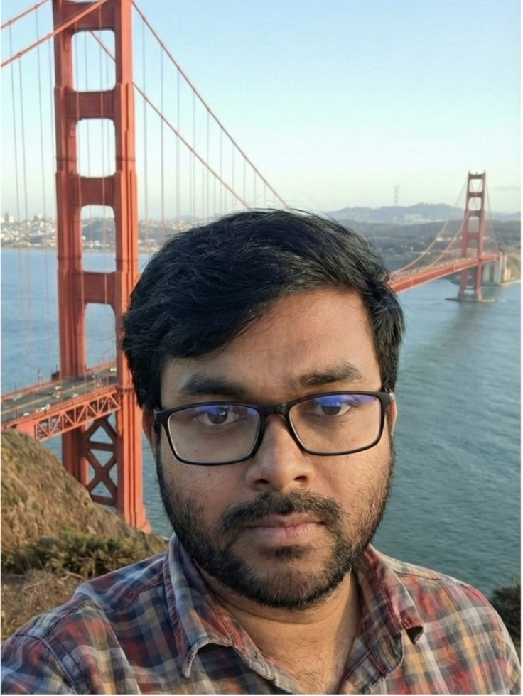
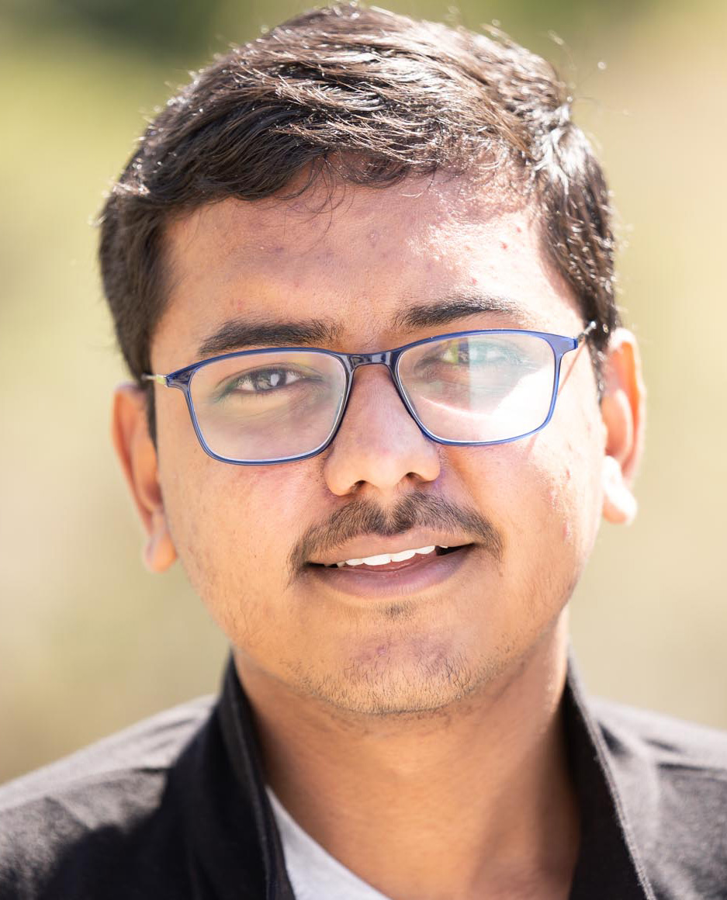
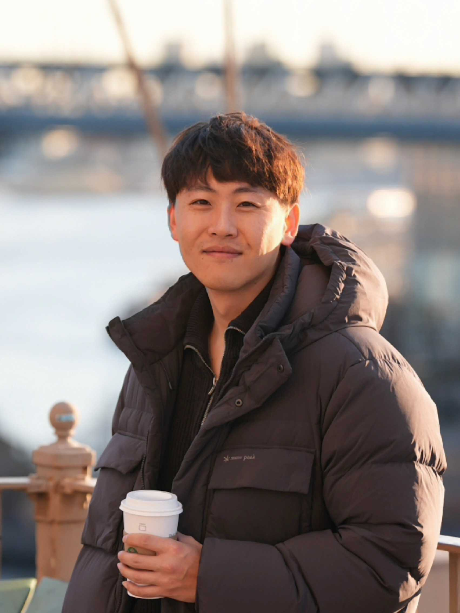
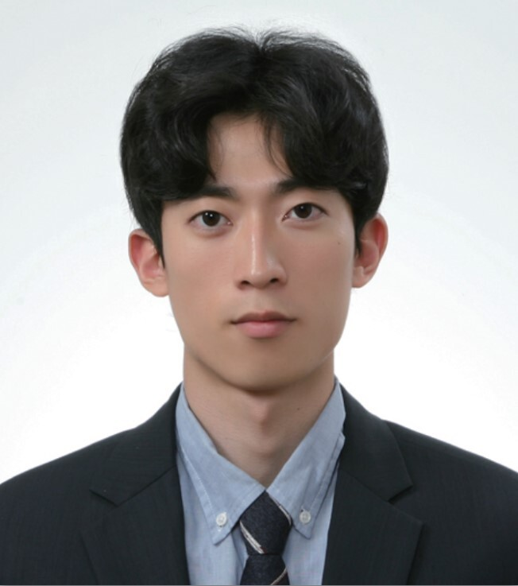

The Team
The faces transforming device science
Graduate Students

Koushik Das
PhD Student, Chemistry
Ferroic Thin Films for Energy-Efficient Logic and Memory

Chirag Garg
PhD Student, EECS
Hardware Accelerators for Optimization Problems

Chia-Chun Lee
PhD Student, EECS
Gate-All-Around NCFET

Ramit Dutta
PhD Student, EECS
Ultrathin Body Ferroelectric FET
Richard McManus
PhD Student, EECS
Frequency Scaling in RF SOI MOSFETs

Kim Pham
PhD Student, EECS
Ultra-high Density 3D Capacitors

Aniket Sadishiva
PhD Student, EECS
Hardware Accelerators for Optimization Problems

Wei-Yang Wang
PhD Student, EECS
FeFET Array for Analog Computing

Yonghyeok Son
PhD Student, EECS
3D DRAM Charactericstics and Process

Jooseong Yun
PhD Student, EECS
Next Generation Memory
Postdoctoral Fellows

Dr. Myeongseop Song
Postdoctoral Fellow, EECS
ALD-grown Ultra-high Density Trench Capacitors

Dr. Junghyeon Hwang
Postdoctoral Fellow, EECS
Energy-efficient Memory Devices